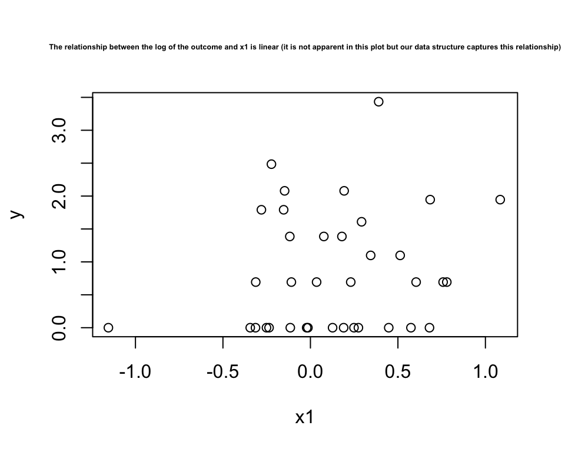
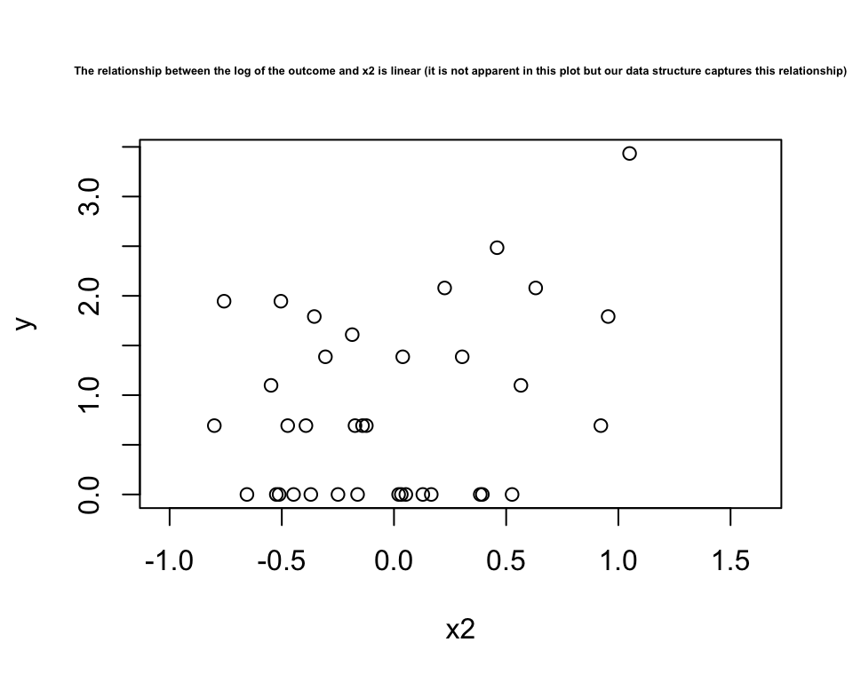
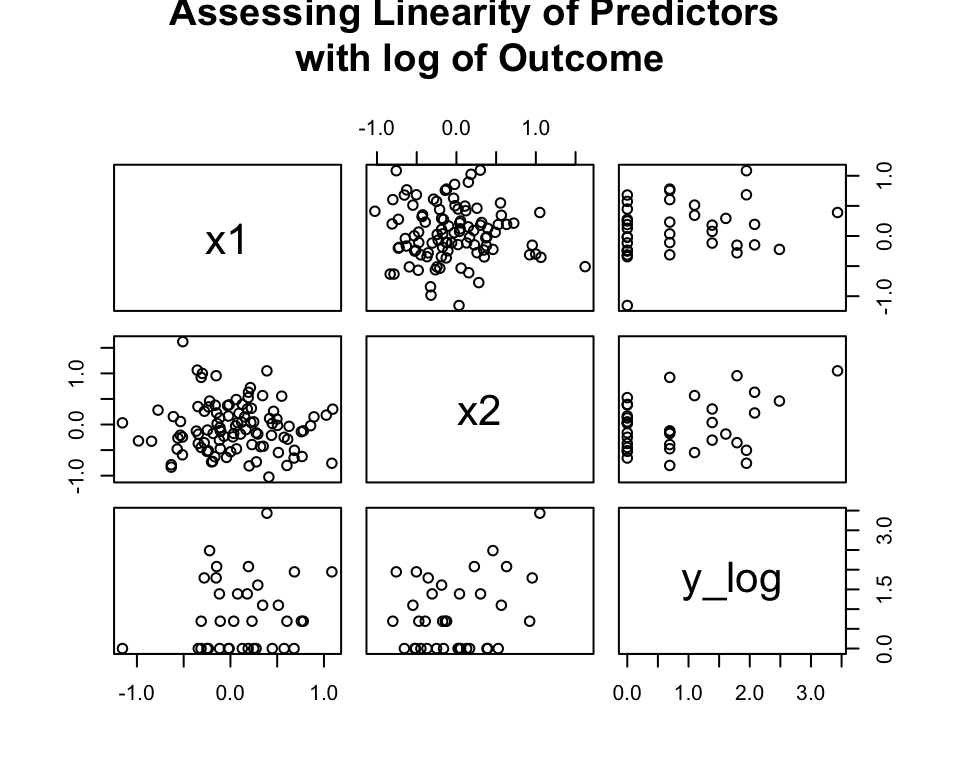
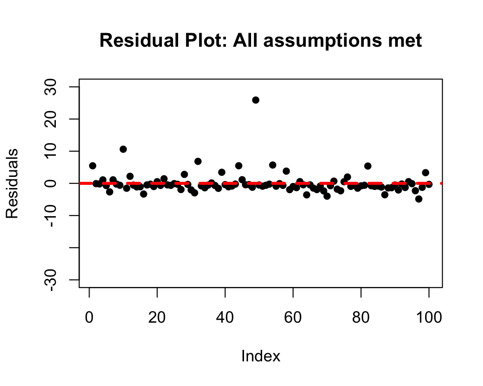
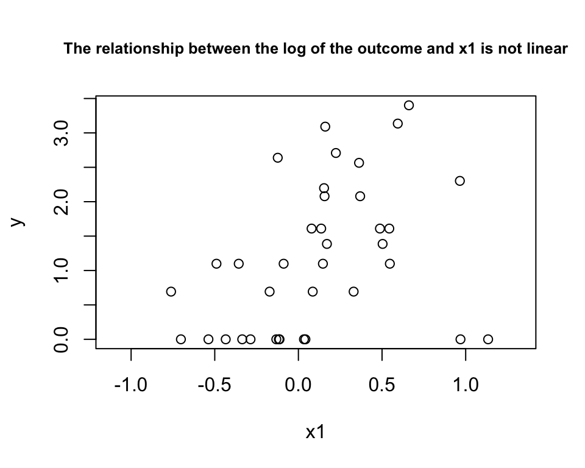
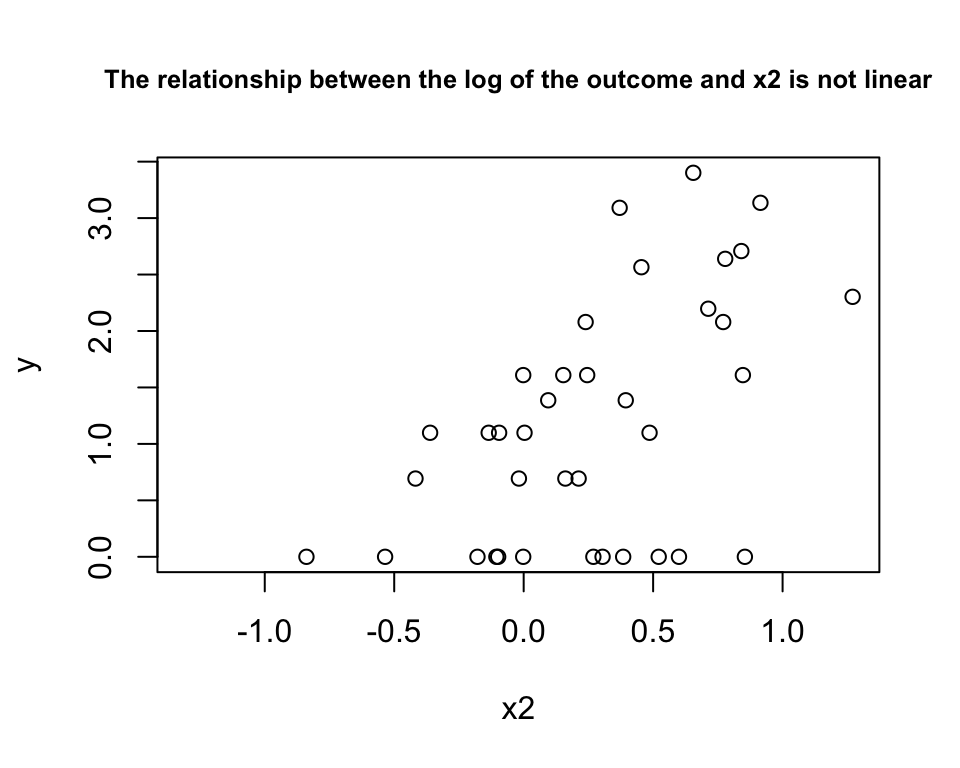
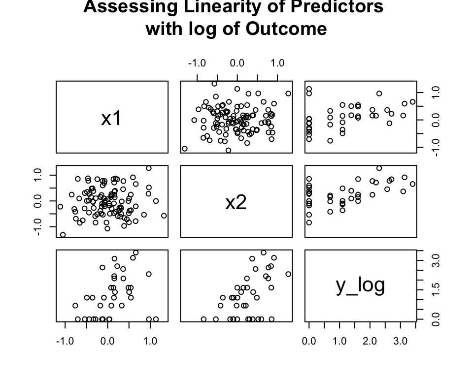
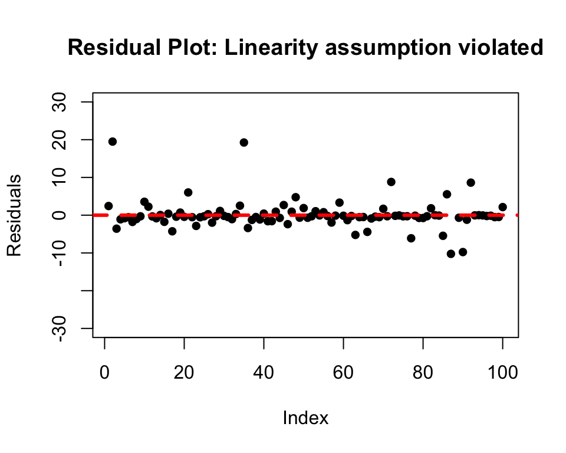
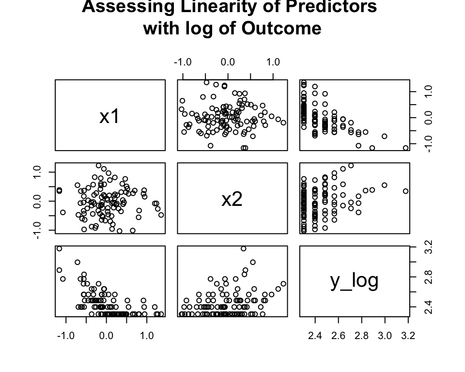
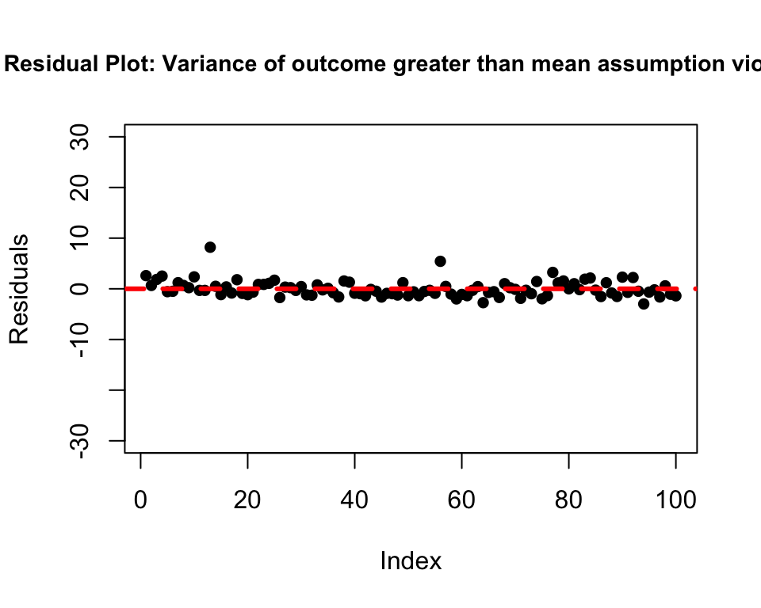

negative_binomial_regression <- function(data, ..., y) {
n <- nrow(data)
x_parameters <- c(...)
# defining the predictor matrix
X <-
matrix(c(rep(1, n), x_parameters),
nrow = n,
ncol = ncol(data)
)
# defining the outcome matrix
Y <- matrix(y, nrow = n, ncol = 1)
# starting with theta = 1
theta <- 1
# defining the log likelihood
negative_binomial.likelihood <- function(beta, X, Y = y) {
eta <- X %*% beta
mu <- exp(eta)
loglikelihood <-
sum(Y * log(mu) - (Y + 1 / theta) * log(1 + mu / theta))
return(loglikelihood)
}
# starting with an initial guess of the parameter values
initial_guess <- rep(0, ncol(X))
# using 'optim' to maximize the log likelihood
result <- optim(
initial_guess,
negative_binomial.likelihood,
X = X,
Y = Y,
control = list(fnscale = -1),
hessian = T,
method = NULL
)$par
# creating a vector 'estimate' for the beta coefficients
estimate <- result
# bootstrapping to estimate the standard errors
num_bootstraps <- 10
result_bootstrap <-
matrix(0, nrow = num_bootstraps, ncol = ncol(X))
for (i in 1:num_bootstraps) {
sample_indices <- sample(nrow(data), replace = TRUE)
bootstrap_data <- data[sample_indices, ]
X_bootstrap <-
matrix(
c(rep(1, nrow(bootstrap_data)), x_parameters),
nrow = nrow(bootstrap_data),
ncol = ncol(bootstrap_data)
)
Y_bootstrap <-
matrix(bootstrap_data$y,
nrow = nrow(bootstrap_data),
ncol = 1
)
initial_guess_bootstrap <-
matrix(0, nrow = ncol(bootstrap_data), ncol = 1)
result_bootstrap[i, ] <- optim(
initial_guess_bootstrap,
negative_binomial.likelihood,
X = X_bootstrap,
Y = Y_bootstrap,
control = list(fnscale = -1),
hessian = T,
method = NULL
)$par
}
# finding the standard deviation of the bootstrapped betas to find the
# standard error of the coefficients
se <- apply(result_bootstrap, 2, sd)
# calculating the z-statistic
z <- estimate / se
# defining the degrees of freedom
df <- nrow(X) - ncol(X)
# calculating the p-value
p <- 2 * pnorm(z, lower.tail = FALSE)
# defining the row names of the output data frame
rownames <- c()
for (i in 1:((ncol(X)) - 1)) {
rownames[i] <- i
}
data_to_plot <- data[, -which(colnames(data) == "y")]
data_to_plot$y_log <- log(data$y)
test <- list(
pairs(data_to_plot, main = "Assessing Linearity of Predictors \nwith log of Outcome")
)
impl <- data.frame(
Estimate = estimate,
Std.Error = se,
z.value = z,
p.value = p,
DegOfFreedom = c(df, rep(NA, ncol(X) - 1)),
row.names = c("(Intercept)", paste0(rep("x", ncol(
X
) - 1), rownames))
)
# returning a data frame akin to the glm probit output
return(list(test, impl))
}Negative Binomial
Introduction
Negative Binomial Regression is used for predicting count data, similar to Poisson Regression, but the Negative Binomial is more flexible as it allows for the variance of the outcome to be greater than its mean (in Poisson Regression, they are assumed to be equal).
Uses
Negative Binomial Regression is used to model count data with excess zeros (as in the Zero-Inflated Negative Binomial Regression) and is used to model rare events which are less likely to have counts where mean = variance. Negative Binomial can be extended to handle correlated/clustered data as well.
Assumptions
- The outcome represents count data
- The variance of the outcome is greater than its mean
- The relationship between the predictors and the log of the outcome’s mean is linear
- The errors are independent of one another
Our Negative Binomial Regression Implementation
Our Negative Binomial Regression implementation: (Note that we use bootstrapping to estimate standard errors)
Creating a function to predict the outcomes based on our Negative Binomial Regression implementation.
predict_neg_binom <-
function(data, ..., y, implementation_neg_binom) {
n <-
implementation_neg_binom$DegOfFreedom[1] + nrow(implementation_neg_binom)
input_covariate_values <- c(...)
X <-
matrix(
c(rep(1, n), input_covariate_values),
nrow = n,
ncol = nrow(implementation_neg_binom)
)
Y <- matrix(y, nrow = n, ncol = 1)
estimate <-
implementation_neg_binom[1:nrow(implementation_neg_binom), 1]
pred <- exp(X %*% estimate)
return(pred)
}Creating a test data set which meets all Negative Binomial Regression assumptions to check if our function works.
x1 <- rnorm(100, mean = 0, sd = 0.5)
x2 <- rnorm(100, mean = 0, sd = 0.5)
y <- rnbinom(100, mu = exp(x1 + x2), size = 0.5)
test_neg_binom_regression_data <- data.frame(x1, x2, y)
# to ensure that the variance of the outcome variable is greater
# than its mean
var(y) > mean(y)[1] TRUEplot(test_neg_binom_regression_data$x1, log(test_neg_binom_regression_data$y),
main = "The relationship between the log of the outcome and x1 is linear (it is not apparent in this plot but our data structure captures this relationship)", cex.main = 0.4,
xlab = "x1", ylab = "y"
)
plot(test_neg_binom_regression_data$x2, log(test_neg_binom_regression_data$y),
xlab = "x2", ylab = "y",
main = "The relationship between the log of the outcome and x2 is linear (it is not apparent in this plot but our data structure captures this relationship)", cex.main = 0.4
)
Testing Assumptions for Negative Binomial Regression
test_negbinom_reg <- negative_binomial_regression(test_neg_binom_regression_data,
test_neg_binom_regression_data$x1,
test_neg_binom_regression_data$x2,
y = test_neg_binom_regression_data$y
)[[1]]
Using our implementation of Negative Binomial to fit the model and get residual measure.
our_implementation_neg_binom <-
negative_binomial_regression(
test_neg_binom_regression_data,
test_neg_binom_regression_data$x1,
test_neg_binom_regression_data$x2,
y = test_neg_binom_regression_data$y
)[[2]]
our_implementation_neg_binom Estimate Std.Error z.value p.value DegOfFreedom
(Intercept) 0.07019194 0.4237645 0.165639 0.86844102 97
x1 1.08333669 0.7137122 1.517890 0.12904208 NA
x2 1.08402921 0.4776059 2.269715 0.02322489 NAComparing our output to R’s output.
r_implementation_neg_binom <-
summary(glm.nb(y ~ x1 + x2, data = test_neg_binom_regression_data))
r_implementation_neg_binom
Call:
glm.nb(formula = y ~ x1 + x2, data = test_neg_binom_regression_data,
init.theta = 0.2843070253, link = log)
Deviance Residuals:
Min 1Q Median 3Q Max
-1.29425 -0.97170 -0.78659 -0.03923 1.85674
Coefficients:
Estimate Std. Error z value Pr(>|z|)
(Intercept) 0.06525 0.21920 0.298 0.7660
x1 1.13741 0.48623 2.339 0.0193 *
x2 1.08214 0.44280 2.444 0.0145 *
---
Signif. codes: 0 '***' 0.001 '**' 0.01 '*' 0.05 '.' 0.1 ' ' 1
(Dispersion parameter for Negative Binomial(0.2843) family taken to be 1)
Null deviance: 86.734 on 99 degrees of freedom
Residual deviance: 75.001 on 97 degrees of freedom
AIC: 278.94
Number of Fisher Scoring iterations: 1
Theta: 0.2843
Std. Err.: 0.0718
2 x log-likelihood: -270.9420 We note that the results are similar.
We followed all assumptions of Negative Binomial Regression in regressing y on x1 and x2 using the test_neg_binom_regression_data data set. We will compare the residual of this regression to that of all the others where assumptions will be broken.
The residual for where all assumptions are met:
prediction_all_assumptions_met <-
as.numeric(
predict_neg_binom(
test_neg_binom_regression_data,
test_neg_binom_regression_data$x1,
test_neg_binom_regression_data$x2,
y = test_neg_binom_regression_data$y,
implementation_neg_binom = our_implementation_neg_binom
)
)
residual_all_assumptions_met <- sqrt(mean((
test_neg_binom_regression_data$y - prediction_all_assumptions_met
)^2))
residual_all_assumptions_met # small residual[1] 3.442564# residual plot
plot(
test_neg_binom_regression_data$y - prediction_all_assumptions_met,
ylim = c(-30, 30),
ylab = "Residuals",
main = "Residual Plot: All assumptions met",
pch = 16
)
abline(
h = 0,
col = "red",
lty = 2,
lwd = 3
)
Breaking Assumptions
Breaking the assumption that the relationship between the predictors and the log of the outcome’s mean is linear
Creating a data set where, if we apply Negative Binomial regression, this assumption will be broken.
x1 <- rnorm(100, mean = 0, sd = 0.5)
x2 <- rnorm(100, mean = 0, sd = 0.5)
y <- rnbinom(100, mu = exp(x1 + x2)^2, size = 0.5)
test_neg_binom_regression_data_not_linear <- data.frame(x1, x2, y)
# to ensure that the variance of the outcome variable is greater
# than its mean
var(y) > mean(y)[1] TRUEplot(test_neg_binom_regression_data_not_linear$x1, log(test_neg_binom_regression_data_not_linear$y),
main = "The relationship between the log of the outcome and x1 is not linear", cex.main = 0.8,
xlab = "x1", ylab = "y"
)
plot(test_neg_binom_regression_data_not_linear$x2, log(test_neg_binom_regression_data_not_linear$y),
xlab = "x2", ylab = "y", cex.main = 0.8,
main = "The relationship between the log of the outcome and x2 is not linear"
)
Using our implementation of Negative Binomial to fit the model and get a residual measure.
our_implementation_neg_binom_not_linear <-
negative_binomial_regression(
test_neg_binom_regression_data_not_linear,
test_neg_binom_regression_data_not_linear$x1,
test_neg_binom_regression_data_not_linear$x2,
y = test_neg_binom_regression_data_not_linear$y
)[[2]]
prediction_not_linear <-
as.numeric(
predict_neg_binom(
test_neg_binom_regression_data_not_linear,
test_neg_binom_regression_data_not_linear$x1,
test_neg_binom_regression_data_not_linear$x2,
y = test_neg_binom_regression_data_not_linear$y,
implementation_neg_binom = our_implementation_neg_binom_not_linear
)
)
residual_not_linear <- sqrt(mean((
test_neg_binom_regression_data_not_linear$y - prediction_not_linear
)^2))
residual_not_linear # large residual[1] 7.155735# residual plot
plot(
test_neg_binom_regression_data_not_linear$y - prediction_not_linear,
ylim = c(-30, 30),
ylab = "Residuals",
main = "Residual Plot: Linearity assumption violated",
pch = 16
)
abline(
h = 0,
col = "red",
lty = 2,
lwd = 3
)
Breaking the assumption that the mean of the outcome is smaller than its variance
Creating a data set where, if we apply Negative Binomial regression, this assumption will be broken.
x1 <- rnorm(100, mean = 0, sd = 0.5)
x2 <- rnorm(100, mean = 0, sd = 0.5)
y <- rnbinom(100, mu = exp(x2 - 2 * x1), size = 100) + 10
test_neg_binom_regression_data_mean_greater <- data.frame(x1, x2, y)
# to ensure that the variance of the outcome variable is smaller
# than its mean
var(y) > mean(y)[1] FALSEUsing our implementation of Negative Binomial to fit the model and get a residual measure.
our_implementation_neg_binom_mean_greater <-
negative_binomial_regression(
test_neg_binom_regression_data_mean_greater,
test_neg_binom_regression_data_mean_greater$x1,
test_neg_binom_regression_data_mean_greater$x2,
y = test_neg_binom_regression_data_mean_greater$y
)[[2]]
prediction_mean_greater <-
as.numeric(
predict_neg_binom(
test_neg_binom_regression_data_mean_greater,
test_neg_binom_regression_data_mean_greater$x1,
test_neg_binom_regression_data_mean_greater$x2,
y = test_neg_binom_regression_data_mean_greater$y,
implementation_neg_binom = our_implementation_neg_binom_mean_greater
)
)
residual_mean_greater <- sqrt(mean((
test_neg_binom_regression_data_mean_greater$y - prediction_mean_greater
)^2))
residual_mean_greater[1] 1.601529# residual plot
plot(
test_neg_binom_regression_data_mean_greater$y - prediction_mean_greater,
ylim = c(-30, 30),
ylab = "Residuals",
cex.main = 0.9,
main = "Residual Plot: Variance of outcome greater than mean assumption violated",
pch = 16
)
abline(
h = 0,
col = "red",
lty = 2,
lwd = 3
)
Comparing residuals when all assumptions were met versus not
residual_comparison <-
t(
data.frame(
residual_all_assumptions_met,
residual_not_linear,
residual_mean_greater
)
)
row.names(residual_comparison) <- c(
"All assumptions met",
"Linearity assumption violated",
"Variance > Mean assumption violated"
)
colnames(residual_comparison) <- "Residuals"
residual_comparison Residuals
All assumptions met 3.442564
Linearity assumption violated 7.155735
Variance > Mean assumption violated 1.601529Conclusion
The implementation of Negative Binomial Regression where all assumptions are met performs well; however, even the model where an assumption is broken; i.e. where the mean of the outcome is greater than its variance, performs well too - however, it should be noted that even though its predictions might be accurate, its standard errors and p-values might be biased.
set.seed(123)
library(alr4)
library(tidyverse)
library(MASS)
library(pscl)
library(glmbb) # for crabs data
library(kableExtra)
library(lmtest)